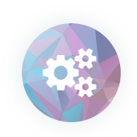
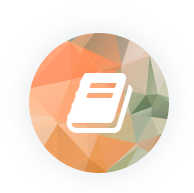
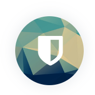
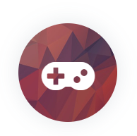

What We Do

SIG
Special Interest Group
특정 주제에 관심 있는 동아리원이 모여 함께 공부하는 모임으로, 매 학기 약 3~4가지 주제의 SIG가 개설됩니다. Java, 리눅스, 그래픽 등 사람만 모이면 어떤 주제라도 언제든지 OK!

Seminar
비정기적 세미나 개최
컴퓨터 하드웨어 조립, 동아리 선배 초청 등 다양한 주제의 세미나를 학기별로 2~3회 진행합니다.

HT/MT
Hard Training/Membership Training
동아리원이 한 자리에 모여 단기간동안 집중해서 코딩을 하고 결과물을 산출하는, 일종의 Hackathon과 유사한 행사입니다. MT형식으로 진행되기도 합니다.
